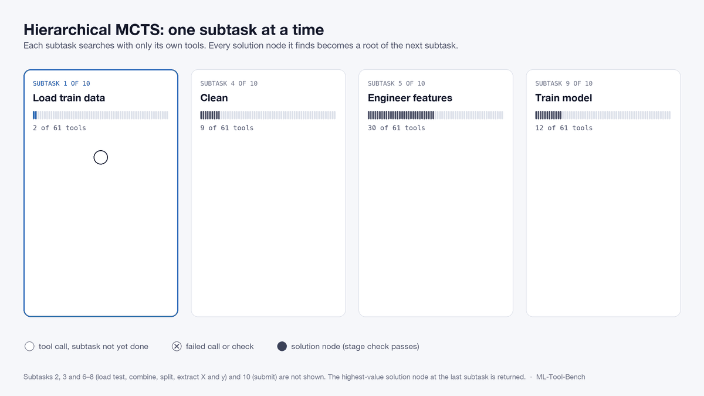

Can an LLM agent solve a Kaggle challenge end to end without writing any code? In ML-Tool-Bench it has to chain dozens of tool calls (load, clean, engineer features, train, predict), keeping every intermediate dataframe and model in a named scratchpad. Most tool-use benchmarks test choosing the right tool and filling in its arguments over short sequences. A full ML pipeline needs twenty or more dependent calls.
The benchmark
A dataframe with 10,000 rows cannot be pasted into a tool argument. In ML-Tool-Bench every artifact lives in a scratchpad, a key–value store of named objects. The agent passes names; tools read their inputs from the scratchpad by name and write their outputs back under names the agent picks. A bad call can't corrupt the only copy of the data, and the agent can keep several versions around and reuse them later.
End-to-end machine learning requires coordinating long sequences of interdependent operations: data loading, preprocessing, feature engineering, model training, and prediction. While LLM agents have shown promise through direct code generation, such approaches are brittle and tightly couple reasoning with execution. Tool-augmented agents offer an alternative with modular building blocks that decouple planning from code, yet existing benchmarks evaluate only shallow trajectories (1-3 tool calls). Real ML workflows demand 20+ sequential invocations producing complex artifacts like dataframes and fitted models that must persist across the trajectory. We introduce ML-Tool-Bench, the first benchmark for long-horizon, tool-augmented planning on ML tasks, comprising 61 specialized tools and 15 Kaggle challenges. We show that ReAct and LATS fail to produce valid tool sequences for these complex pipelines. To address this, we propose shaped rewards with stage-wise feedback, hierarchical task decomposition with tool masking, and in-memory named object management for storing and retrieving intermediate results. With GPT-4o, our methods improve over ReAct by 16.52 percentile positions (median across challenges), demonstrating that structured guidance is critical for effective tool-augmented planning.
output name.An illustrative trajectory, written in the benchmark's real call format and tool names. The shapes and messages are made up for the example. Tools that return several values (a train/test split, a tuned model with its parameters and score) store them under fixed names.
The action space
Each call is a tool plus its arguments, so the effective action space is far larger than 61. Modeling uses tree ensembles (random forest, XGBoost, LightGBM, CatBoost) and linear or logistic regression, each tuned with cross-validation. Pick a stage to see the subset of tools Hierarchical MCTS exposes there.
Planning approaches
We compare five planners. Each tree search keeps a path-local scratchpad: a node stores only the objects its own tool call produced, and can read anything stored along its path from the root. Because full rollouts are too expensive, every search variant scores a node by its immediate reward, which makes it a best-first search with a UCT exploration bonus.
Think, call one tool, observe, repeat. One pass, no backtracking.
Tree search where an evaluator LLM scores each partial trajectory.
Tree search rewarded only for a trained model or a valid submission.
Deterministic, verifiable rewards for each pipeline stage, plus textual feedback on failures.
Solves the stages as subtasks in order, each with only its own tools.
A stage earns its reward once per trajectory, and only after every earlier stage has passed. The checks inspect the node's scratchpad and tool log, so no LLM judges progress.
When a check fails, the search returns a concrete explanation instead of a bare score. All MCTS variants get this feedback; failed tool calls also come back with the tool's docstring.

Results
Each planner runs 10 times on every challenge. Consistency is the fraction of runs that end in a valid submission. Leaderboard percentile is the share of the public Kaggle leaderboard that the run's score beats, computed on our held-out split; an invalid run counts as 0. We report the median over the 10 runs, then the median over the 15 challenges.
Ablations and checks
Decomposition alone isn't enough. Without the mask, Hierarchical MCTS falls to the level of ReAct.
On the full Kaggle data, scored by real Kaggle submissions, the same pattern holds: MCTS-Shaped and Hierarchical MCTS lead. The benchmark's held-out split is a reasonable proxy.
LATS spends the most and gets the least: 0.2 consistency and a median percentile of 0 on these five challenges. ReAct is cheapest and nearly as poor.
ReAct-Code writes and runs Python, refining it from execution feedback for up to 10 rounds. It is the strongest method overall. The best tool planners get within about 12 points while restricted to a fixed toolset, which suggests the 61 tools cover most of what these tabular tasks need.
Use the benchmark
The code installs the 61 tools, the scratchpad environment, the grader and all six planners. Datasets are not redistributed: they download through the Kaggle API, and you must accept each competition's rules first. Public leaderboards ship with the repo as score-only snapshots, so computing percentiles needs no Kaggle access.
git clone https://github.com/yaswanthchittepu/ML-Tool-Bench.git cd ML-Tool-Bench pip install -e ".[agents,prepare]" # Python >= 3.11 cp .env.example .env # OPENAI_MODEL, OPENAI_API_KEY mltoolbench prepare # needs ~/.kaggle/kaggle.json
mltoolbench run --config baselines/hierarchical_mcts.yaml \
--model gpt-4o --workers 8
mltoolbench run --agent react --tasks spaceship_titanic --runs 3
mltoolbench report runs/Each run writes submission.csv, trajectory.json (every LLM step and tool call) and result.json (grade, tokens, cost, wall time). Any OpenAI-compatible endpoint works, including vLLM.
from mltoolbench.agents import Agent, RunContext from mltoolbench.env import ToolSession class MyAgent(Agent): name = "my_agent" def run(self, ctx: RunContext): session = ToolSession() # 61 tools + empty scratchpad tools = session.openai_tools() # function-calling schemas prompt = ctx.prompt() # task + where to save ... # your loop: text = session.call(name, args) # the submission must end up at ctx.submission_path
mltoolbench run --agent my_pkg.my_module:MyAgent --model gpt-4o mltoolbench grade spaceship_titanic submission.csv
ToolSession(stage="modeling") gives a stage's masked tool set. LangGraph users can call mltoolbench.env.langchain.langchain_tools(...).
Each uses up to 10,000 rows sampled with seed 42, with 20% held out (stratified for classification) as the test set. Scores use each competition's official metric.
Use the results
Compare a new planner against ours without retyping tables from the PDF.
Scope. GPT-4o and GPT-4.1-mini were chosen to fit a $5,000 budget: with 10 runs per planner and challenge and hundreds of LLM calls per tree search, frontier models would have cost several times more. The benchmark covers tabular classification and regression only.
Citation
@article{chittepu2025mltoolbench,
title = {{ML-Tool-Bench}: Tool-Augmented Planning for {ML} Tasks},
author = {Chittepu, Yaswanth and Addanki, Raghavendra and Mai, Tung
and Rao, Anup and Kveton, Branislav},
journal = {arXiv preprint arXiv:2512.00672},
year = {2025}
}